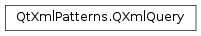

QXmlQuery¶
Synopsis¶
Functions¶
- def
bindVariable(localName, arg__2) - def
bindVariable(localName, query) - def
bindVariable(localName, value) - def
bindVariable(name, arg__2) - def
bindVariable(name, query) - def
bindVariable(name, value) - def
evaluateTo(callback) - def
evaluateTo(result) - def
evaluateTo(target) - def
initialTemplateName() - def
isValid() - def
messageHandler() - def
namePool() - def
networkAccessManager() - def
queryLanguage() - def
setFocus(document) - def
setFocus(documentURI) - def
setFocus(focus) - def
setFocus(item) - def
setInitialTemplateName(name) - def
setInitialTemplateName(name) - def
setMessageHandler(messageHandler) - def
setNetworkAccessManager(newManager) - def
setQuery(queryURI[, baseURI=QUrl()]) - def
setQuery(sourceCode[, documentURI=QUrl()]) - def
setQuery(sourceCode[, documentURI=QUrl()]) - def
setUriResolver(resolver) - def
uriResolver()
Detailed Description¶
The
PySide2.QtXmlPatterns.QXmlQueryclass performs XQueries on XML data, or on non-XML data modeled to look like XML.The
PySide2.QtXmlPatterns.QXmlQueryclass compiles and executes queries written in the XQuery language.PySide2.QtXmlPatterns.QXmlQueryis typically used to query XML data, but it can also query non-XML data that has been modeled to look like XML.Using
PySide2.QtXmlPatterns.QXmlQueryto query XML data, as in the snippet below, is simple because it can use the built-inXML data modelas its delegate to the underlying query engine for traversing the data. The built-in data model is specified in XQuery 1.0 and XPath 2.0 Data Model.QXmlQuery query; query.setQuery("doc('index.html')/html/body/p[1]"); QXmlSerializer serializer(query, myOutputDevice); query.evaluateTo(&serializer);The example uses
PySide2.QtXmlPatterns.QXmlQueryto match the first paragraph of an XML document and thenoutput the resultto a device as XML.Using
PySide2.QtXmlPatterns.QXmlQueryto query non-XML data requires writing a subclass ofPySide2.QtXmlPatterns.QAbstractXmlNodeModelto use as a replacement for the built-in XML data model. The custom data model will be able to traverse the non-XML data as required by thePySide2.QtXmlPatterns.QAbstractXmlNodeModelinterface. An instance of this custom data model then becomes the delegate used by the query engine to traverse the non-XML data. For an example of how to usePySide2.QtXmlPatterns.QXmlQueryto query non-XML data, see the documentation forPySide2.QtXmlPatterns.QAbstractXmlNodeModel.
Running XQueries¶
To run a query set up with
PySide2.QtXmlPatterns.QXmlQuery, call one of the evaluation functions.
PySide2.QtXmlPatterns.QXmlQuery.evaluateTo()(QAbstractXmlReceiver *) is called with a pointer to an XML receiver, which receives the query results as a sequence of callbacks. The receiver callback class is like the callback class used for translating the output of a SAX parser.PySide2.QtXmlPatterns.QXmlSerializer, for example, is a receiver callback class for translating the sequence of callbacks for output as unformatted XML text.PySide2.QtXmlPatterns.QXmlQuery.evaluateTo()(PySide2.QtXmlPatterns.QXmlResultItems*) is called with a pointer to an iterator for an empty sequence of queryresult items. The Java-like iterator allows the query results to be accessed sequentially.PySide2.QtXmlPatterns.QXmlQuery.evaluateTo()(PySide2.QtCore.QStringList*) is likePySide2.QtXmlPatterns.QXmlQuery.evaluateTo()(PySide2.QtXmlPatterns.QXmlResultItems*), but the query must evaluate to a sequence of strings.
Running XPath Expressions¶
The XPath language is a subset of the XQuery language, so running an XPath expression is the same as running an XQuery query. Pass the XPath expression toPySide2.QtXmlPatterns.QXmlQueryusingPySide2.QtXmlPatterns.QXmlQuery.setQuery().
Running XSLT Stylesheets¶
Running an XSLT stylesheet is like running an XQuery , except that when you construct your
PySide2.QtXmlPatterns.QXmlQuery, you must passQXmlQuery.XSLT20to tellPySide2.QtXmlPatterns.QXmlQueryto interpret whatever it gets fromPySide2.QtXmlPatterns.QXmlQuery.setQuery()as an XSLT stylesheet instead of as an XQuery . You must also set the input document by callingPySide2.QtXmlPatterns.QXmlQuery.setFocus().QXmlQuery query(QXmlQuery::XSLT20); query.setFocus(QUrl("myInput.xml")); query.setQuery(QUrl("myStylesheet.xsl")); query.evaluateTo(out);Note
Currently,
PySide2.QtXmlPatterns.QXmlQuery.setFocus()must be called beforePySide2.QtXmlPatterns.QXmlQuery.setQuery()when using XSLT.Another way to run an XSLT stylesheet is to use the
xmlpatternscommand line utility.xmlpatterns myStylesheet.xsl myInput.xmlNote
For the current release, XSLT support should be considered experimental. See section XSLT conformance for details.
Stylesheet parameters are bound using
PySide2.QtXmlPatterns.QXmlQuery.bindVariable().
Binding A Query To A Starting Node¶
When a query is run on XML data, as in the snippet above, thedoc()function returns the node in the built-in data model where the query evaluation will begin. But when a query is run on a custom node model containing non-XML data, one of thePySide2.QtXmlPatterns.QXmlQuery.bindVariable()functions must be called to bind a variable name to a starting node in the custom model. A $variable reference is used in the XQuery text to access the starting node in the custom model. It is not necessary to declare the variable name external in the query. See the example in the documentation forPySide2.QtXmlPatterns.QAbstractXmlNodeModel.
Reentrancy and Thread-Safety¶
PySide2.QtXmlPatterns.QXmlQueryis reentrant but not thread-safe. It is safe to use the QxmlQuery copy constructor to create a copy of a query and run the same query multiple times. Behind the scenes,PySide2.QtXmlPatterns.QXmlQuerywill reuse resources such as opened files and compiled queries to the extent possible. But it is not safe to use the same instance ofPySide2.QtXmlPatterns.QXmlQueryin multiple threads.
Error Handling¶
Errors can occur during query evaluation. Examples include type errors and file loading errors. When an error occurs:
- The error message is sent to the
PySide2.QtXmlPatterns.QXmlQuery.messageHandler().QXmlResultItems.hasError()will returntrue, orPySide2.QtXmlPatterns.QXmlQuery.evaluateTo()will returnfalse;- The results of the evaluation are undefined.
Resource Management¶
When a query runs, it parses documents, allocating internal data structures to hold them, and it may load other resources over the network. It reuses these allocated resources when possible, to avoid having to reload and reparse them.
When
PySide2.QtXmlPatterns.QXmlQuery.setQuery()is called, the query text is compiled into an internal data structure and optimized. The optimized form can then be reused for multiple evaluations of the query. Since the compile-and-optimize process can be expensive, repeating it for the same query should be avoided by using a separate instance ofPySide2.QtXmlPatterns.QXmlQueryfor each query text.Once a document has been parsed, its internal representation is maintained in the
PySide2.QtXmlPatterns.QXmlQueryinstance and shared among multiplePySide2.QtXmlPatterns.QXmlQueryinstances.An instance of
PySide2.QtCore.QCoreApplicationmust exist beforePySide2.QtXmlPatterns.QXmlQuerycan be used.
Event Handling¶
WhenPySide2.QtXmlPatterns.QXmlQueryaccesses resources (e.g., callingfn:doc()to load a file, or accessing a device via a bound variable), the event loop is used, which means events will be processed. To avoid processing events whenPySide2.QtXmlPatterns.QXmlQueryaccesses resources, create yourPySide2.QtXmlPatterns.QXmlQueryinstance in a separate thread.
-
class
PySide2.QtXmlPatterns.QXmlQuery¶ -
class
PySide2.QtXmlPatterns.QXmlQuery(queryLanguage[, np=QXmlNamePool()]) -
class
PySide2.QtXmlPatterns.QXmlQuery(np) -
class
PySide2.QtXmlPatterns.QXmlQuery(other) Parameters: - np –
PySide2.QtXmlPatterns.QXmlNamePool - other –
PySide2.QtXmlPatterns.QXmlQuery - queryLanguage –
PySide2.QtXmlPatterns.QXmlQuery.QueryLanguage
Constructs an invalid, empty query that cannot be used until
PySide2.QtXmlPatterns.QXmlQuery.setQuery()is called.Note
This constructor must not be used if you intend to use this
PySide2.QtXmlPatterns.QXmlQueryto process XSL-T stylesheets. The other constructor must be used in that case.Constructs a query that will be used to run Xqueries or XSL-T stylesheets, depending on the value of
queryLanguage. It will usenpas its name pool.Note
If your
PySide2.QtXmlPatterns.QXmlQuerywill process XSL-T stylesheets, this constructor must be used. The default constructor can only create instances ofPySide2.QtXmlPatterns.QXmlQueryfor running XQueries.Note
The XSL-T support in this release is considered experimental. See the XSLT conformance for details.
Constructs a query that will use
npas its name pool. The query cannot be evaluated untilPySide2.QtXmlPatterns.QXmlQuery.setQuery()has been called.Constructs a
PySide2.QtXmlPatterns.QXmlQuerythat is a copy ofother. The new instance will share resources with the existing query to the extent possible.- np –
-
PySide2.QtXmlPatterns.QXmlQuery.QueryLanguage¶ Specifies whether you want
PySide2.QtXmlPatterns.QXmlQueryto interpret the input toPySide2.QtXmlPatterns.QXmlQuery.setQuery()as an XQuery or as an XSLT stylesheet.Constant Description QXmlQuery.XQuery10 XQuery 1.0. QXmlQuery.XSLT20 XSLT 2.0 The selector, the restricted XPath pattern found in W3C XML Schema 1.1 for uniqueness contraints. Apart from restricting the syntax, the type check stage for the expression assumes a sequence of nodes to be the focus. The field, the restricted XPath pattern found in W3C XML Schema 1.1 for uniqueness contraints. Apart from restricting the syntax, the type check stage for the expression assumes a sequence of nodes to be the focus. Signifies XPath 2.0. Has no effect in the public API, it’s used internally. As With and , the type check stage for the expression assumes a sequence of nodes to be the focus.
-
PySide2.QtXmlPatterns.QXmlQuery.bindVariable(name, query)¶ Parameters: - name –
PySide2.QtXmlPatterns.QXmlName - query –
PySide2.QtXmlPatterns.QXmlQuery
Binds the result of the query
query, to a variable by namename.Evaluation of
querywill be commenced when this function is called.If
queryis invalid, behavior is undefined.querywill be copied.- name –
-
PySide2.QtXmlPatterns.QXmlQuery.bindVariable(name, arg__2) Parameters: - name –
PySide2.QtXmlPatterns.QXmlName - arg__2 –
PySide2.QtCore.QIODevice
Binds the variable
nameto thedeviceso that $``name`` can be used from within the query to refer to thedevice. ThePySide2.QtCore.QIODevicedeviceis exposed to the query as a URI of typexs:anyURI, which can be passed to thefn:doc()function to be read. E.g., this function can be used to pass an XML document in memory tofn:doc.QByteArray myDocument; QBuffer buffer(&myDocument); // This is a QIODevice. buffer.open(QIODevice::ReadOnly); QXmlQuery query; query.bindVariable("myDocument", &buffer); query.setQuery("doc($myDocument)");
The caller must ensure that
devicehas been opened with at leastQIODevice.ReadOnlyprior to this binding. Otherwise, behavior is undefined.If the query will access an XML document contained in a
PySide2.QtCore.QString, use aPySide2.QtCore.QBufferas shown in the following snippet. Suppose myQString contains<document>content</document>QBuffer device; device.setData(myQString.toUtf8()); device.open(QIODevice::ReadOnly); QXmlQuery query; query.setQuery("doc($inputDocument)/query[theDocument]"); query.bindVariable("inputDocument", &device);
namemust not be null .name.isNull() must return false. Ifnamehas already been bound, its previous binding will be overridden. The URI thatnameevaluates to is arbitrary and may change.If the type of the variable binding changes (e.g., if a previous binding by the same name was a
PySide2.QtCore.QVariant, or if there was no previous binding),PySide2.QtXmlPatterns.QXmlQuery.isValid()will returnfalse, and recompilation of the query text is required. To recompile the query, callPySide2.QtXmlPatterns.QXmlQuery.setQuery(). For this reason,PySide2.QtXmlPatterns.QXmlQuery.bindVariable()should be called beforePySide2.QtXmlPatterns.QXmlQuery.setQuery(), if possible.Note
devicemust not be deleted while thisPySide2.QtXmlPatterns.QXmlQueryexists.- name –
-
PySide2.QtXmlPatterns.QXmlQuery.bindVariable(name, value) Parameters: - name –
PySide2.QtXmlPatterns.QXmlName - value –
PySide2.QtXmlPatterns.QXmlItem
Binds the variable
nameto thevalueso that $``name`` can be used from within the query to refer to thevalue.namemust not be null .name.isNull() must return false. Ifnamehas already been bound by a previous call, its previous binding will be overridden.If
valueis null so thatvalue.isNull() returns true, andnamealready has a binding, the effect is to remove the existing binding forname.To bind a value of type
PySide2.QtCore.QStringorPySide2.QtCore.QUrl, wrap the value in aPySide2.QtCore.QVariantsuch thatPySide2.QtXmlPatterns.QXmlItem‘sPySide2.QtCore.QVariantconstructor is called.All strings processed by the query must be valid XQuery strings, which means they must contain only XML 1.0 characters. However, this requirement is not checked. If the query processes an invalid string, the behavior is undefined.
See also
QVariant.isValid()How QVariant maps to XQuery’s Data ModelQXmlItem.isNull()- name –
-
PySide2.QtXmlPatterns.QXmlQuery.bindVariable(localName, arg__2) Parameters: - localName – unicode
- arg__2 –
PySide2.QtCore.QIODevice
This is an overloaded function.
If
localNameis a validNCName, this function is equivalent to the following snippet.QXmlNamePool namePool(query.namePool()); query.bindVariable(QXmlName(namePool, localName), device);
A
PySide2.QtXmlPatterns.QXmlNameis constructed fromlocalName, and is passed to the appropriate overload along withdevice.See also
-
PySide2.QtXmlPatterns.QXmlQuery.bindVariable(localName, query) Parameters: - localName – unicode
- query –
PySide2.QtXmlPatterns.QXmlQuery
This is an overloaded function.
Has the same behavior and effects as the function being overloaded, but takes the variable name
localNameas aPySide2.QtCore.QString.queryis used as in the overloaded function.
-
PySide2.QtXmlPatterns.QXmlQuery.bindVariable(localName, value) Parameters: - localName – unicode
- value –
PySide2.QtXmlPatterns.QXmlItem
This is an overloaded function.
This function constructs a
PySide2.QtXmlPatterns.QXmlNamefromlocalNameusing the query’snamespace. The function then behaves as the overloaded function. It is equivalent to the following snippet.QXmlNamePool namePool(query.namePool()); query.bindVariable(QXmlName(namePool, localName), value);
-
PySide2.QtXmlPatterns.QXmlQuery.evaluateTo(result)¶ Parameters: result – PySide2.QtXmlPatterns.QXmlResultItemsStarts the evaluation and makes it available in
result. Ifresultis null, the behavior is undefined. The evaluation takes place incrementally (lazy evaluation), as the caller usesQXmlResultItems.next()to get the next result.See also
-
PySide2.QtXmlPatterns.QXmlQuery.evaluateTo(target) Parameters: target – PySide2.QtCore.QIODeviceReturn type: PySide2.QtCore.boolEvaluates the query or stylesheet, and writes the output to
target.PySide2.QtXmlPatterns.QXmlSerializeris used to write the output totarget. In a future release, it is expected that this function will be changed to respect serialization options set in the stylesheet.If an error occurs during the evaluation, error messages are sent to
PySide2.QtXmlPatterns.QXmlQuery.messageHandler()andfalseis returned.If
targetisnull, or is not opened in at leastQIODevice.WriteOnlymode, the behavior is undefined.PySide2.QtXmlPatterns.QXmlQuerydoes not take ownership oftarget.This is an overloaded function.
-
PySide2.QtXmlPatterns.QXmlQuery.evaluateTo(callback) Parameters: callback – PySide2.QtXmlPatterns.QAbstractXmlReceiverReturn type: PySide2.QtCore.boolEvaluates this query and sends the result as a sequence of callbacks to the receiver
callback.PySide2.QtXmlPatterns.QXmlQuerydoes not take ownership ofcallback.If an error occurs during the evaluation, error messages are sent to
PySide2.QtXmlPatterns.QXmlQuery.messageHandler()andfalseis returned.If this query
is invalid,falseis returned and the behavior is undefined. Ifcallbackis null, behavior is undefined.
-
PySide2.QtXmlPatterns.QXmlQuery.initialTemplateName()¶ Return type: PySide2.QtXmlPatterns.QXmlNameReturns the name of the XSL-T stylesheet template that the processor will call first when running an XSL-T stylesheet. This function only applies when using
PySide2.QtXmlPatterns.QXmlQueryto process XSL-T stylesheets. By default, no initial template is set. In that case, a default constructedPySide2.QtXmlPatterns.QXmlNameis returned.
-
PySide2.QtXmlPatterns.QXmlQuery.isValid()¶ Return type: PySide2.QtCore.boolReturns true if this query is valid. Examples of invalid queries are ones that contain syntax errors or that have not had
PySide2.QtXmlPatterns.QXmlQuery.setQuery()called for them yet.
-
PySide2.QtXmlPatterns.QXmlQuery.messageHandler()¶ Return type: PySide2.QtXmlPatterns.QAbstractMessageHandlerReturns the message handler that handles compile and runtime messages for this
PySide2.QtXmlPatterns.QXmlQuery.
-
PySide2.QtXmlPatterns.QXmlQuery.namePool()¶ Return type: PySide2.QtXmlPatterns.QXmlNamePoolReturns the name pool used by this
PySide2.QtXmlPatterns.QXmlQueryfor constructingnames. There is no setter for the name pool, because mixing name pools causes errors due to name confusion.
-
PySide2.QtXmlPatterns.QXmlQuery.networkAccessManager()¶ Return type: PySide2.QtNetwork.QNetworkAccessManagerReturns the network manager, or 0 if it has not been set.
-
PySide2.QtXmlPatterns.QXmlQuery.queryLanguage()¶ Return type: PySide2.QtXmlPatterns.QXmlQuery.QueryLanguageReturns a value indicating what this
PySide2.QtXmlPatterns.QXmlQueryis being used for. The default isQXmlQuery.XQuery10, which means thePySide2.QtXmlPatterns.QXmlQueryis being used for running XQuery and XPath queries.QXmlQuery.XSLT20can also be returned, which indicates thePySide2.QtXmlPatterns.QXmlQueryis for running XSL-T spreadsheets.
-
PySide2.QtXmlPatterns.QXmlQuery.setFocus(item)¶ Parameters: item – PySide2.QtXmlPatterns.QXmlItemSets the focus to
item. The focus is the set of items that the context item expression and path expressions navigate from. For example, in the expression p/span , the element that p evaluates to is the focus for the following expression, span .The focus can be accessed using the context item expression, i.e., dot (“.”).
By default, the focus is not set and is undefined. It will therefore result in a dynamic error,
XPDY0002, if the focus is attempted to be accessed. The focus must be set before the query is set withPySide2.QtXmlPatterns.QXmlQuery.setQuery().There is no behavior defined for setting an item which is null.
-
PySide2.QtXmlPatterns.QXmlQuery.setFocus(documentURI) Parameters: documentURI – PySide2.QtCore.QUrlReturn type: PySide2.QtCore.boolThis is an overloaded function.
Sets the focus to be the document located at
documentURIand returns true. IfdocumentURIcannot be loaded, false is returned. It is undefined at what time the document may be loaded. When loading the document, the message handler and URI resolver set on thisPySide2.QtXmlPatterns.QXmlQueryare used.If
documentURIis empty or is not a valid URI, the behavior of this function is undefined.
-
PySide2.QtXmlPatterns.QXmlQuery.setFocus(document) Parameters: document – PySide2.QtCore.QIODeviceReturn type: PySide2.QtCore.boolSets the focus to be the
documentread from thePySide2.QtCore.QIODeviceand returns true. Ifdocumentcannot be loaded, false is returned.PySide2.QtXmlPatterns.QXmlQuerydoes not take ownership ofdocument. The user guarantees that a document is available from thedocumentdevice and that the document is not empty. The device must be opened in at least read-only mode.documentmust stay in scope as long as the current query is active.This is an overloaded function.
-
PySide2.QtXmlPatterns.QXmlQuery.setFocus(focus) Parameters: focus – unicode Return type: PySide2.QtCore.boolThis function behaves identically to calling the
PySide2.QtXmlPatterns.QXmlQuery.setFocus()overload with aPySide2.QtCore.QIODevicewhose content isfocusencoded as UTF-8. That is,focusis treated as if it contained an XML document.Returns the same result as the overload.
This is an overloaded function.
-
PySide2.QtXmlPatterns.QXmlQuery.setInitialTemplateName(name)¶ Parameters: name – PySide2.QtXmlPatterns.QXmlNameSets the
nameof the initial template. The initial template is the one the processor calls first, instead of attempting to match a template to the context node (if any). If an initial template is not set, the standard order of template invocation will be used.This function only applies when using
PySide2.QtXmlPatterns.QXmlQueryto process XSL-T stylesheets. The name becomes part of the compiled stylesheet. Therefore, this function must be called before callingPySide2.QtXmlPatterns.QXmlQuery.setQuery().If the stylesheet has no template named
name, the processor will use the standard order of template invocation.
-
PySide2.QtXmlPatterns.QXmlQuery.setInitialTemplateName(name) Parameters: name – unicode This is an overloaded function.
Sets the name of the initial template to
localName, which must be a validlocal name. The initial template is the one the processor calls first, instead of attempting to match a template to the context node (if any). If an initial template is not set, the standard order of template invocation will be used.This function only applies when using
PySide2.QtXmlPatterns.QXmlQueryto process XSL-T stylesheets. The name becomes part of the compiled stylesheet. Therefore, this function must be called before callingPySide2.QtXmlPatterns.QXmlQuery.setQuery().If
localNameis not a validlocal name, the effect is undefined. If the stylesheet has no template namedlocalName, the processor will use the standard order of template invocation.
-
PySide2.QtXmlPatterns.QXmlQuery.setMessageHandler(messageHandler)¶ Parameters: messageHandler – PySide2.QtXmlPatterns.QAbstractMessageHandlerChanges the
message handlerfor thisPySide2.QtXmlPatterns.QXmlQuerytoaMessageHandler. The query sends all compile and runtime messages to this message handler.PySide2.QtXmlPatterns.QXmlQuerydoes not take ownership ofaMessageHandler.Normally, the default message handler is sufficient. It writes compile and runtime messages to stderr . The default message handler includes color codes if stderr can render colors.
Note that changing the message handler after the query has been compiled has no effect, i.e. the query uses the same message handler at runtime that it uses at compile time.
When
PySide2.QtXmlPatterns.QXmlQuerycallsQAbstractMessageHandler.message(), the arguments are as follows:message() argument Semantics QtMsgTypetypeOnly QtWarningMsgandQtFatalMsgare used. The former identifies a compile or runtime warning, while the latter identifies a dynamic or static error.const PySide2.QtCore.QString& descriptionAn XHTML document which is the actual message. It is translated into the current language. const PySide2.QtCore.QUrl&identifierIdentifies the error with a URI, where the fragment is the error code, and the rest of the URI is the error namespace. const PySide2.QtXmlPatterns.QSourceLocation& sourceLocationIdentifies where the error occurred.
-
PySide2.QtXmlPatterns.QXmlQuery.setNetworkAccessManager(newManager)¶ Parameters: newManager – PySide2.QtNetwork.QNetworkAccessManagerSets the network manager to
newManager.PySide2.QtXmlPatterns.QXmlQuerydoes not take ownership ofnewManager.
-
PySide2.QtXmlPatterns.QXmlQuery.setQuery(queryURI[, baseURI=QUrl()])¶ Parameters: - queryURI –
PySide2.QtCore.QUrl - baseURI –
PySide2.QtCore.QUrl
Sets this
PySide2.QtXmlPatterns.QXmlQueryto the XQuery read from thequeryURI. UsePySide2.QtXmlPatterns.QXmlQuery.isValid()after calling this function. If an error occurred readingqueryURI, e.g., the query does not exist, cannot be read, or is invalid,PySide2.QtXmlPatterns.QXmlQuery.isValid()will return false .The supported URI schemes are the same as those in the XQuery function
fn:doc, except that queryURI can be the object of a variable binding.baseURIis the Base URI of the static context, as defined in the XQuery language. It is used internally to resolve relative URIs that appear in the query, and for message reporting. IfbaseURIis empty,queryURIis used. Otherwise,baseURIis used, and it is resolved against theapplication file pathif it is relative.If
queryURIis empty or invalid, or ifbaseURIis invalid, the behavior of this function is undefined.- queryURI –
-
PySide2.QtXmlPatterns.QXmlQuery.setQuery(sourceCode[, documentURI=QUrl()]) Parameters: - sourceCode – unicode
- documentURI –
PySide2.QtCore.QUrl
This is an overloaded function.
The behavior and requirements of this function are the same as for
PySide2.QtXmlPatterns.QXmlQuery.setQuery()(PySide2.QtCore.QIODevice*, constPySide2.QtCore.QUrl&), after the XQuery has been read from the IO device into a string. BecausesourceCodeis already a Unicode string, detection of its encoding is unnecessary.
-
PySide2.QtXmlPatterns.QXmlQuery.setQuery(sourceCode[, documentURI=QUrl()]) Parameters: - sourceCode –
PySide2.QtCore.QIODevice - documentURI –
PySide2.QtCore.QUrl
Sets this
PySide2.QtXmlPatterns.QXmlQueryto an XQuery read from thesourceCodedevice. The device must have been opened with at leastQIODevice.ReadOnly.documentURIrepresents the query obtained from thesourceCodedevice. It is the base URI of the static context, as defined in the XQuery language. It is used internally to resolve relative URIs that appear in the query, and for message reporting.documentURIcan be empty. If it is empty, theapplication file pathis used. If it is not empty, it may be either relative or absolute. If it is relative, it is resolved itself against theapplication file pathbefore it is used. IfdocumentURIis neither a valid URI nor empty, the result is undefined.If the query contains a static error (e.g. syntax error), an error message is sent to the
PySide2.QtXmlPatterns.QXmlQuery.messageHandler(), andPySide2.QtXmlPatterns.QXmlQuery.isValid()will return false .Variables must be bound before is called.
The encoding of the XQuery in
sourceCodeis detected internally using the rules for setting and detecting encoding of XQuery files, which are explained in the XQuery language.If
sourceCodeisnullor not readable, or ifdocumentURIis not a valid URI, behavior is undefined.- sourceCode –
-
PySide2.QtXmlPatterns.QXmlQuery.setUriResolver(resolver)¶ Parameters: resolver – PySide2.QtXmlPatterns.QAbstractUriResolverSets the URI resolver to
resolver.PySide2.QtXmlPatterns.QXmlQuerydoes not take ownership ofresolver.
-
PySide2.QtXmlPatterns.QXmlQuery.uriResolver()¶ Return type: PySide2.QtXmlPatterns.QAbstractUriResolverReturns the query’s URI resolver. If no URI resolver has been set, Qt XML Patterns will use the URIs in queries as they are.
The URI resolver provides a level of abstraction, or polymorphic URIs . A resolver can rewrite logical URIs to physical ones, or it can translate obsolete or invalid URIs to valid ones.
Qt XML Patterns calls the URI resolver for all URIs it encounters, except for namespaces. Specifically, all builtin functions that deal with URIs (
fn:doc(), andfn:doc-available()).In the case of
fn:doc(), the absolute URI is the base URI in the static context (which most likely is the location of the query). Rather than use the URI the user specified, the return value ofQAbstractUriResolver.resolve()will be used.When Qt XML Patterns calls
QAbstractUriResolver.resolve()the absolute URI is the URI mandated by the XQuery language, and the relative URI is the URI specified by the user.
© 2018 The Qt Company Ltd. Documentation contributions included herein are the copyrights of their respective owners. The documentation provided herein is licensed under the terms of the GNU Free Documentation License version 1.3 as published by the Free Software Foundation. Qt and respective logos are trademarks of The Qt Company Ltd. in Finland and/or other countries worldwide. All other trademarks are property of their respective owners.